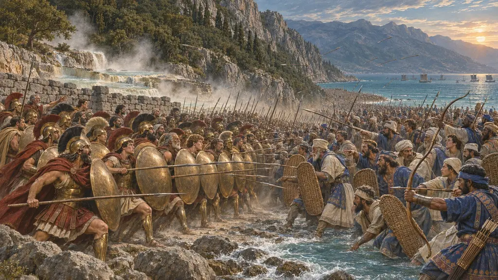
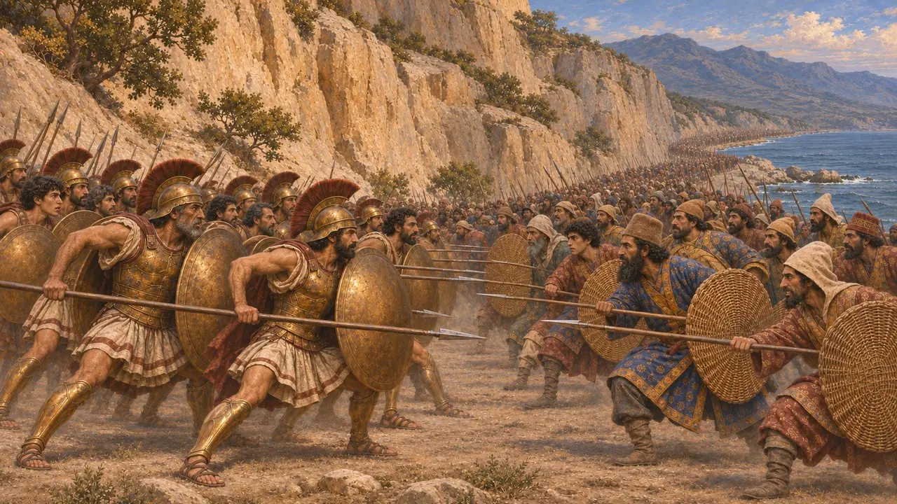
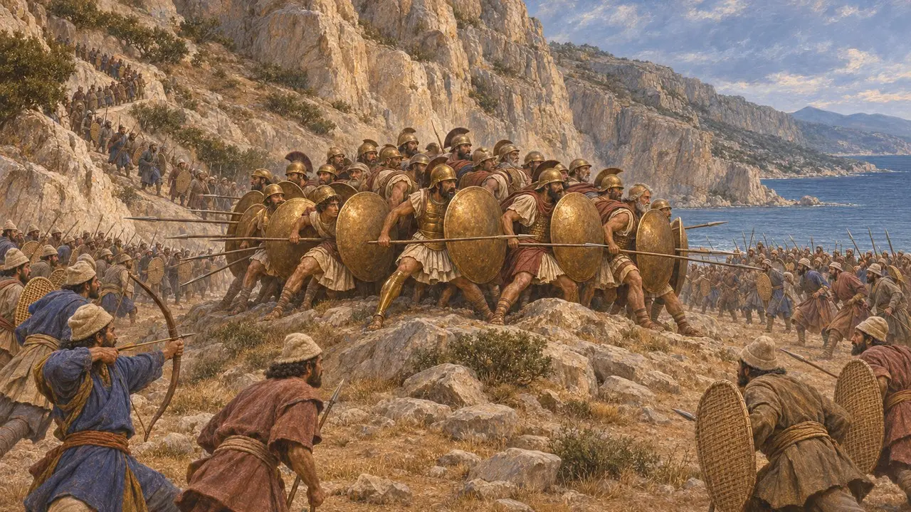
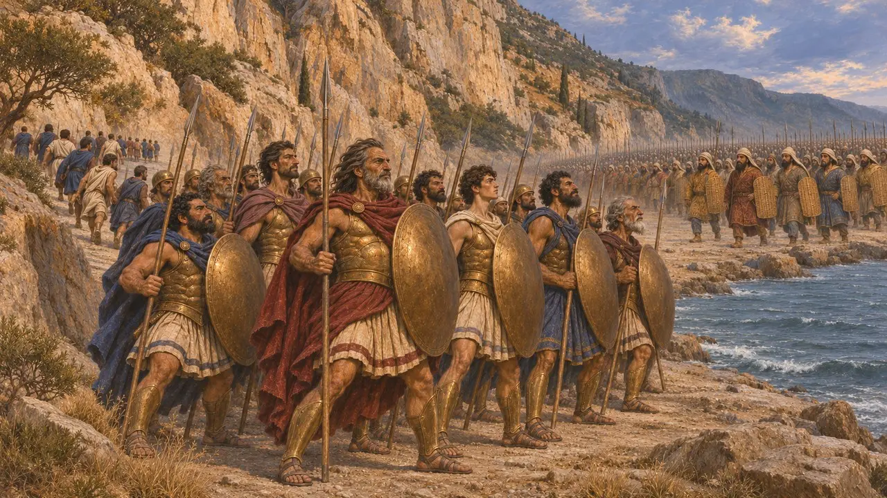
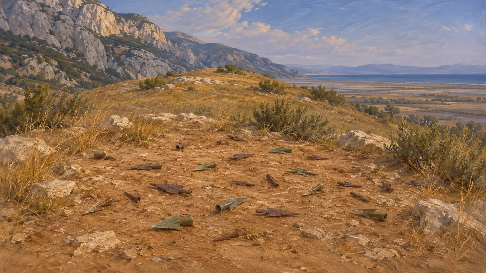
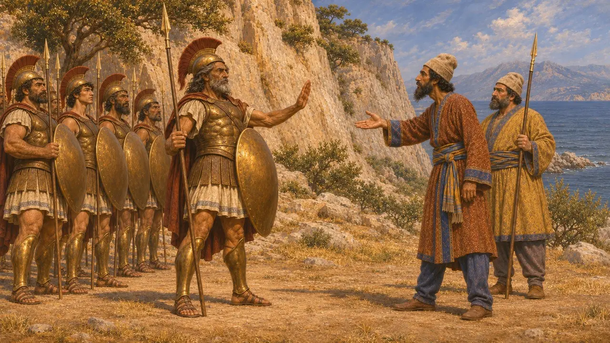

公元前480年夏末,斯巴达国王列奥尼达率领的一支希腊军队,试图在山脉与马利斯湾之间的狭窄隘道温泉关阻挡薛西斯的大军。波斯军连攻两日未果,叙达尔涅斯所率部队沿一条山间小路绕到了背后。第三天,列奥尼达和留下与他同守的人全部战死,通往希腊中部的道路就此洞开。
游戏中： 温泉关关卡围绕这场战役展开。游戏称斯巴达人和泰斯皮亚人全部战死。希罗多德提到有两名斯巴达人,阿里斯托得莫斯和潘提特斯,当时不在战场而幸存了下来。

坚守隘口
古代记述希罗多德说,薛西斯在特拉基斯等了四天,期待希腊人撤退。随后他派出米底人和基西亚人,再往后是叙达尔涅斯率领的不死军。在狭窄的地形上,他们的人数几乎派不上用场,希罗多德说,斯巴达人用佯装撤退把他们引上来,然后回身痛击。第二天的战斗也是同样的结果。
Herodotus 7.201-212

山间小径与最后一战
古代记述希罗多德说,一个名叫厄菲阿尔特的马利斯人,在夜间带领叙达尔涅斯的部队走过阿诺派亚小道。一千名福基斯人把守着高地,却退到了一处山顶,波斯人便从旁边走了过去。随后大多数盟军离开了,有的是被列奥尼达遣走,有的是自己选择离去,而斯巴达人、泰斯皮亚人和底比斯人留了下来。希罗多德说,斯巴达人和泰斯皮亚人死在隘道中的一座小丘上,底比斯人则投降,并被烙上了印记。
Herodotus 7.213-233

数量、动机与底比斯人
争夺中希罗多德称薛西斯拥有170万步兵,连同舰队和随军人员共有500多万人,史家认为这些数字荒诞地夸大了,现代估计只有其中的一小部分。古代作家对希腊一方的兵力也说法不一。史家争论列奥尼达留下究竟是像希罗多德所说为了荣誉和一则神谕,还是为了掩护撤退。普鲁塔克驳斥了希罗多德的说法,即底比斯人留下只是不情愿的人质。
Herodotus 7.60, 7.186, 7.202, 7.220-222; Diodorus 11.4; Plutarch, On the Malice of Herodotus

留存下来的东西与波斯人的沉默
见于史载1939年,斯皮里东·马里纳托斯发掘了隘口中的科洛诺斯低丘,发现了大量青铜和铁质的箭镞。多数学者认为这座山丘就是最后一战的所在。此后河流泥沙淤积,使海岸线从当年的隘口向后退了很远。没有任何波斯文献提到这场战斗,因此波斯一方的情形只能通过希腊作家得知。
Excavations of S. Marinatos, 1939; P. Briant, From Cyrus to Alexander, 2002

后世的箴言与故事
后世传说普鲁塔克收集的斯巴达格言中,列奥尼达面对交出兵器的要求,回答说“来取吧”。狄奥多罗斯则讲述了希腊人夜袭国王营帐的故事,希罗多德对此只字未提。这些故事成文于数百年之后,并被加工成对斯巴达勇气的颂扬。它们最好当作传说来读,而不是对当时言行的记录。
Plutarch, Sayings of the Spartans; Diodorus 11.9-10
来源
- Herodotus 7.175-239
- Diodorus 11.4-11
- Plutarch, On the Malice of Herodotus
- J. F. Lazenby, The Defence of Greece 490-479 BC, 1993
- P. Cartledge, Thermopylae: The Battle That Changed the World, 2006
- P. Briant, From Cyrus to Alexander, 2002